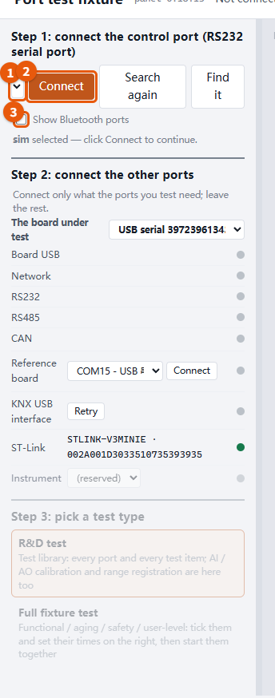
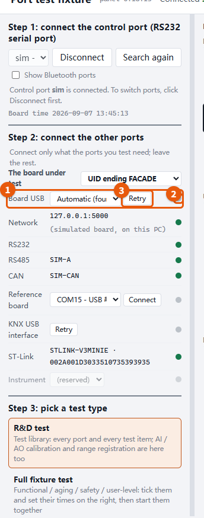
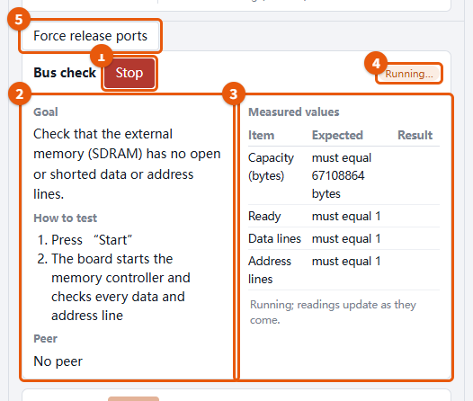
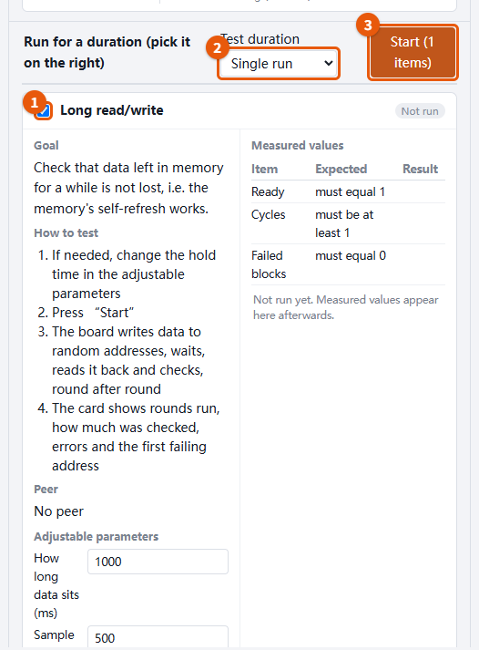
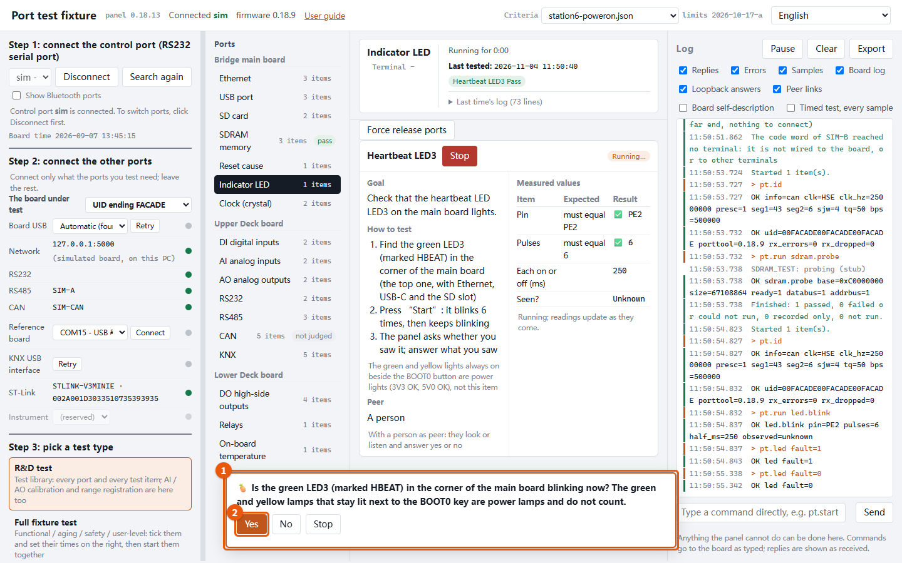
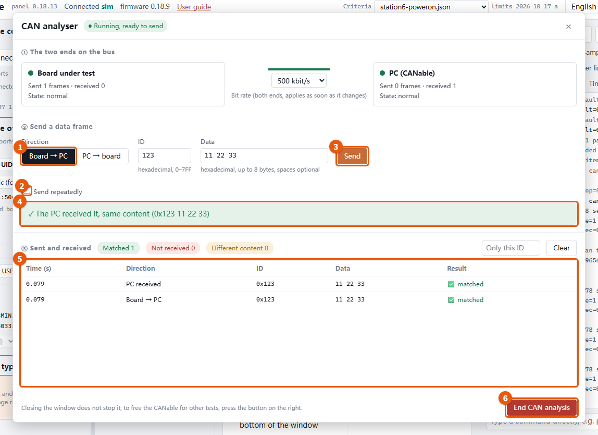
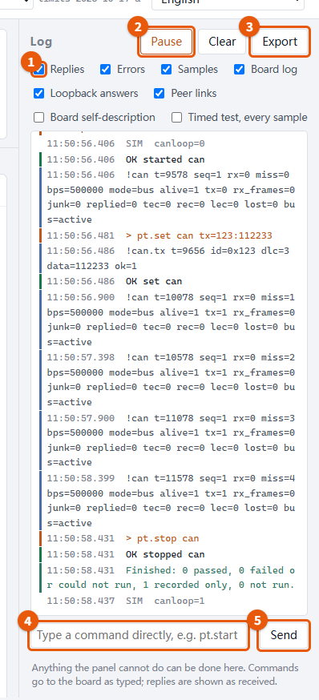
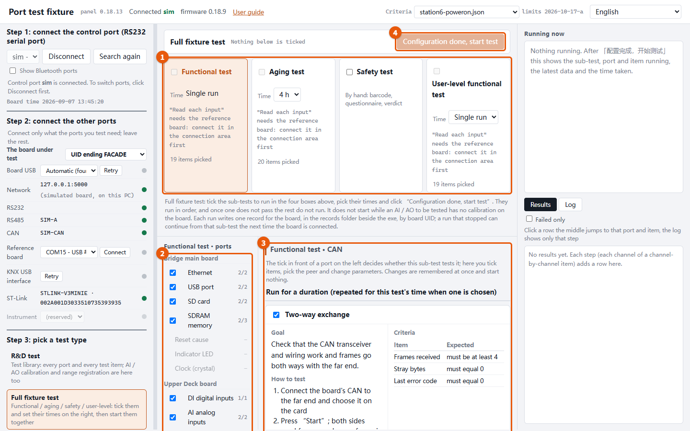

This guide follows the panel: the orange boxes and numbers on each screenshot are the places to look at or click, and the text below uses the same numbers. The screenshots were taken on the simulated board; a real board looks the same, only the readings differ.
Step 1: connect the control port; every reading comes over this cable.
Step 2: connect the other ports; only what the ports you test need.
Step 3: pick a test type, R&D test or full fixture test.
Port list: click a port to see its test items on the right.
Test item cards: each card gives the goal, how to test and the peer; the measured values are on its right.
Log: every line between the board and the panel.
2. Step 1: connect the control port

Pick the board's RS232 control port: usually the USB-to-serial adapter plugged into the PC, wired to terminals C05/C06. Without a board, pick “sim” to try the panel.
Press “Connect”. Steps 2 and 3 open once it is connected.
Bluetooth serial ports are hidden; tick “Show Bluetooth ports” to list them.
3. Step 2: connect the other ports

Each row is one far end: board USB, network, RS485 / CAN adapters, reference board, KNX USB interface, ST-Link. RS485 and CAN are recognised by themselves after the control port connects; pick them by hand only if that fails.
The dot at the end: green = connected, grey = not connected. Hover over a grey row to see why.
A grey row has “Retry”: press it after fixing the wiring.
Ports you do not use can stay grey; everything else still runs.
4. R&D test: run one card
In step 3 pick “R&D test”, then click a port in the middle. The upper cards each have their own “Start”, which runs just that card.

Start: runs this card only; it turns into “Stop” while running.
Goal, how to test, peer: what the item checks, the steps to follow and what to connect. Follow the steps.
Measured values: one row per criterion, expected next to result; ✅ passes, ❌ fails.
Verdict: pass / fail / recorded only.
Force release ports: when a test says a serial port is busy, this stops running tests and closes every port the panel holds.
5. Timed runs
The lower group holds the items that can run for a while (for example the long memory test).

Tick the items to run.
Choose the duration: once, some minutes, some hours, or forever.
Press “Start (N items)”; the ticked items run together and stop at the first failure.
6. When the panel asks you
Items that need a person to look or measure (a lamp, a multimeter, an oscilloscope) show a question marked 🍍 at the bottom.

Look or measure as asked.
Answer “Yes” / “No” or type the number; the panel judges by your answer. “Stop” drops this item.
7. CAN analysis (advanced window)
Put the board and the PC's CAN adapter (CANable) on the same CAN bus. On the CAN port's “CAN analysis” card press “Open the advanced window”: the item starts with it, no separate Start.

Direction: board → PC or PC → board. Then enter ID and data.
Send repeatedly: tick it to show interval and count. While repeating, “Send” turns into “Stop”.
Send: sends one frame.
Verdict: whether the other side received it unchanged; if not, why and what to check.
Sent and received: every frame both sides sent and received.
End CAN analysis: stops the item and frees the CANable. The × at the top right only hides the window.
CAN analysis only records; it does not judge the CAN port.
8. Log and commands

Tick which kinds to show: replies, errors, samples, board log… Unticked lines are still kept and exported.
Pause: stops the log scrolling so you can read.
Export: saves the whole log to a file; attach it when reporting a problem.
Command box: type a command to the board for anything the panel cannot do.
Send: sends it; the board's reply appears in the log as it is.
9. Full fixture test
In step 3 pick “Full fixture test”: functional, burn-in, safety and user-level blocks, configured once and run in one go.

Sub-tests: tick the sub-tests to run and choose each one's time.
Ports: tick the ports this sub-test covers; click one to see its items.
Test items: tick items, pick peers, change parameters; the criteria are on the right.
Start (“Configuration done, start test”): runs them in order and stops after the first failure. Each board's record is saved in the records folder next to the exe.
10. Things to keep in mind
Opening the panel also opens a black console window. Do not close it; closing it stops the panel.
Do not delete the plans folder next to the exe: it holds what passes for every item.
Some limits have no confirmed source; the card shows a default you can change right on the card after your own measurements.
In the screenshots the ST-Link and reference board rows show the simulated board; on a real bench they turn green once connected.